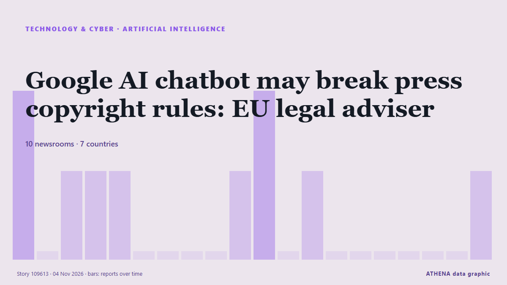

Τεχνολογία, ΤΝ & Κυβερνοασφάλεια
ΧορηγούμενοΠαρουσιάζεται από  Cybernetics and Artificial Intelligence Lab Welcome to the Cybernetics and Artificial Intelligence Laboratory, established at the Department of Business Administration of the National and Kapodistrian University of Athens. The lab is headed by Professor Dimitrios Thomakos. The lab aims to do research that can be published in top venues. Our research uses tools and methods of Artificial Intelligence, and lies in the following areas: - Forecasting - Decision making - Cyber security - Finance We are always looking forward to collaborating with exceptional students!
Cybernetics and Artificial Intelligence Lab Welcome to the Cybernetics and Artificial Intelligence Laboratory, established at the Department of Business Administration of the National and Kapodistrian University of Athens. The lab is headed by Professor Dimitrios Thomakos. The lab aims to do research that can be published in top venues. Our research uses tools and methods of Artificial Intelligence, and lies in the following areas: - Forecasting - Decision making - Cyber security - Finance We are always looking forward to collaborating with exceptional students!
Οι τίτλοι των ειδήσεων παρουσιάζονται στα αγγλικά, όπως δημοσιεύτηκαν.

Τεχνητή νοημοσύνηGoogle AI chatbot may break press copyright rules: EU legal adviser
Google’s AI chatbot Gemini may infringe press copyright rules by reusing published content to generate answers, as highlighted by an EU legal adviser in a landmark case involving Hungarian publisher… από IOL
| 22 Οκτ | 57 |
|---|---|
| 23 Οκτ | 55 |
| 24 Οκτ | 21 |
| 25 Οκτ | 26 |
| 26 Οκτ | 77 |
| 27 Οκτ | 84 |
| 28 Οκτ | 88 |
| 29 Οκτ | 89 |
| 30 Οκτ | 80 |
| 31 Οκτ | 33 |
| 1 Νοε | 47 |
| 2 Νοε | 93 |
| 3 Νοε | 73 |
| 4 Νοε | 3 |
Here's what to know about another cyberattack on European supermarket fridges
Experts say outdated technology and weak passwords are to blame. από PBS NewsHour
Marvell strikes $115B deal for Lumentum
Marvell is acquiring Lumentum in an all-stock deal valued at $115 billion, representing $1,132 per share of Lumentum common stock. #pressrelease. από Light Reading
Fridge cyberattack hits supermarkets across Europe
Grocery stores in at least five European countries saw temperatures in their cold cases soar on Monday, with several confirming they had been hit by a cyberattack similar to one three weeks ago in… από Dawn
South Korea Investigates Online Leak of President's Passport Details
Personal information of 168 people, including Lee Jae Myung, posted on website. από Anadolu Agency (English)
OpenAI hires former US Army Secretary Dan Driscoll for national security
OpenAI has hired Dan Driscoll, the 26th Secretary of the US Army, the company said on Monday. από The Next Web
Elon Musk says 'unsustainably high' costs are the reason for Grok Bot usage limits
The SpaceX CEO said the cost of serving the AI agent was "unsustainably high relative to revenue," after some users complained about usage limits. από Business Insider
Jack Grealish gets new David Moyes message as Everton make statement after discipline breach
Jack Grealish was not named in Everton’s matchday squad for Monday night's Premier League victory over Newcastle United due to a fitness issue. από Liverpool Echo
British adventurer completes 28-year, 50,000km walk home
A 57-year-old British adventurer, Karl Bushby, has returned home after completing a remarkable 28-year, 50,000-kilometre journey on foot across four continents without using any form of transport to… από Vanguard
Germany Says Lawmakers’ Phones May Be Hacked By Spyware
Apple sent threat alerts to German MPs and officials, and Berlin says affected iPhones should be treated as compromised in a suspected state-backed attack. από to vima
Greek butcher shop reports cyberattack targeting refrigeration systems
Hackers allegedly gain access to refrigeration control system, set the temperature to 302F. από Anadolu Agency (English)
Suspected cyberattack sends Swedish supermarket freezers to 50C
The temperature of freezers at several Swedish grocery stores rose sharply overnight, operators ICA and Coop said on Monday, with at least one store blaming the incident on a cyberattack. από Cyprus Mail
Nvidia orders data centre clients to reduce China exposure
World’s biggest chipmaker tells cloud computing providers a majority of their clients must be non-Chinese. από Financial Times - Global economy
UK Must Expect AI-Powered Attack on Critical Infrastructure Within Two Years: Report
Britain should be prepared for an AI-powered cyberattack on its critical national infrastructure in the next two years, the UK’s National Cyber Security Centre said on Tuesday, adding that China was… από Insurance Journal
ADNOC becomes first energy company to deploy OpenAI Frontier in landmark deal with G42
Announced at ADIPEC 2026 in Abu Dhabi, the partnership aims to value crude before extraction and slash oilfield planning times from months to hours. από Arabian Business
Hackers hit Ukraine, Russia's emergency apps, send fake nuclear, chemical attack alerts
All-clear messages were sent shortly afterward for each alert, and Ukraine's Ministry for Digital Transformation said the app had been temporarily suspended. από The Jerusalem Post
Africa: Six in Seven Journalist Murders Go Unpunished, Unesco Reports
[UN News] Global impunity for journalist killings has risen for the first time in more than a decade, while the growing use of drones is an emerging threat for reporters in conflict zones, according… από AllAfrica
South Korea to double spending on AI and chips in 2027
The country is a tech powerhouse home to Samsung Electronics and SK hynix, two of the world's three biggest makers of memory chips. από Free Malaysia Today
AI models mostly smarter than top scientists, OpenAI's Altman says
CEO says AI models capable of performing white-collar work but people must 'remain in control of the future' από Express Tribune
Donald Trump backs Nvidia's Jensen Huang amid Chinese spy plot probe
Nvidia CEO Jensen Huang warned that Europe risks falling further behind the US and China in artificial intelligence, despite its industrial base and technical talent. από DigiTimes Asia
Merz says next German president 'must be a woman' — report
German President Frank-Walter Steinmeier's second term is due to end in March next year. από DW English
(LEAD) Lee orders review for establishment of cybersecurity task force
SEOUL, Nov. 3 (Yonhap) -- President Lee Jae Myung on Tuesday instructed official... από Yonhap (English)
Russian bomb attack on aid centre kills 26, says Ukraine
Russia bombed an aid distribution centre and neighbouring shelter in southern Ukraine, killing 26 people, Ukraine's emergency services agency said. από RTÉ News
Oracle taps investors for US$20bil to finance AI expansion
NEW YORK: Oracle plans to raise US$20 billion through bond and share sales, regulatory filings showed on Monday, as the software giant taps investors to fund its costly AI and cloud infrastructure… από New Straits Times
ClassNK updates ship cyber security guidelines to simplify compliance
ClassNK has released the second edition of its Guidelines for Cyber Security Management System for Ships, introducing clearer audit requirements and closer alignment with international cyber security… από Container News
Ukrainian air raid alert app sends false warnings after being hacked
The app has sent Ukrainians false warnings that some areas of the country face nuclear and chemical threats. από ABC News Australia
HSBC to open Hong Kong AI Institute following Singapore launch
The AI unit will work with Hong Kong University of Science and Technology as its anchor academic partner, although the bank's CEO Georges Elhedery did not disclose headcount details. από CNA (Channel NewsAsia)
Harry Styles & HeadCount Drive Major Voter Action During His MSG Residency: See the Numbers
"Harry's fans arrive ready to make their voices heard," HeadCount's executive director said. από Billboard
Hackers breach Russia's statistics agency, obtain data on Russian losses in Ukraine
Belarusian hacktivist group Cyber Partisans, together with the hacker group Silent Crow, have claimed responsibility for breaching the internal IT infrastructure of Russia's Federal State Statistics… από Ukrinform (English)
Mali and Its Neighbours in the Sahel Explained 2026
How Mali deals with Burkina Faso, Niger, Algeria, Senegal and others, from the AES bloc to fuel routes, rivers and refugees. από The Rio Times
Chainalysis discloses data breach from "offensive agentic techniques"
Blockchain analytics firm Chainalysis disclosed a data breach after attackers used "offensive agentic techniques" to access internal systems and tools, exposing customer names, email addresses, user… από BleepingComputer
Malicious Claude Code extension on Cursor planted SSH backdoors
A malicious version of Anthropic's Claude Code VS Code extension was distributed through Cursor's extension marketplace for approximately 11 hours on October 29, exposing up to 5,000 developers to… από BleepingComputer
(LEAD) Lee vows bold investment in AI, future growth engines to boost growth potential
SEOUL, Nov. 2 (Yonhap) -- President Lee Jae Myung on Monday pledged bold investm... από Yonhap (English)
(2nd LD) S. Korea's monthly exports hit US$115.3 bln in Oct. on strong chip sales
SEOUL, Nov. 1 (Yonhap) -- South Korea's exports jumped 93.7 percent to a record ... από Yonhap (English)